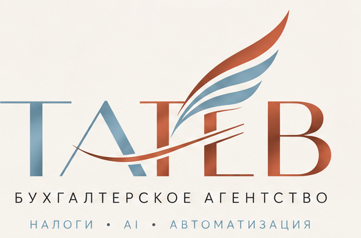

Вайб-кодинг для бухгалтера: вы ставите задачу — ИИ пишет программу. Калькулятор с КП, обработки, публикация и свой инструмент для клиентов. Показываем на Claude Code и Codex, есть путь без VPN.
Татев Багрян
Налоговый консультант, эксперт по ИИ и автоматизации бухгалтерского бизнеса. Видео уроков — на платформе курса, здесь — материалы к ним.
